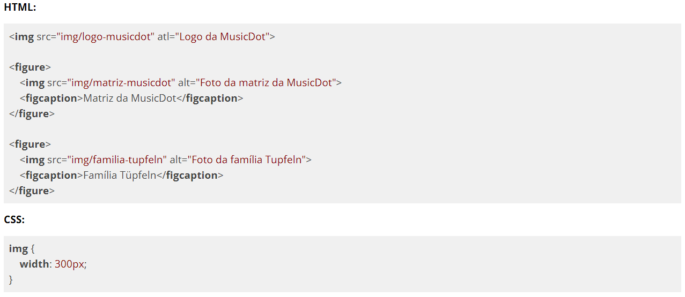

Durante o curso veremos outros tipos de seletores. Por hora veremos um seletor que deixa nossa estilização um pouco mais precisa do que fazemos agora.
Vamos com o exemplo a seguir:

No código acima estamos aplicando uma largura de 300px para todas as tags <img>. Mas e se nós só quisermos aplicar essa largura apenas para as imagens que estão nas figuras? É aí que entra o seletor mais específico: